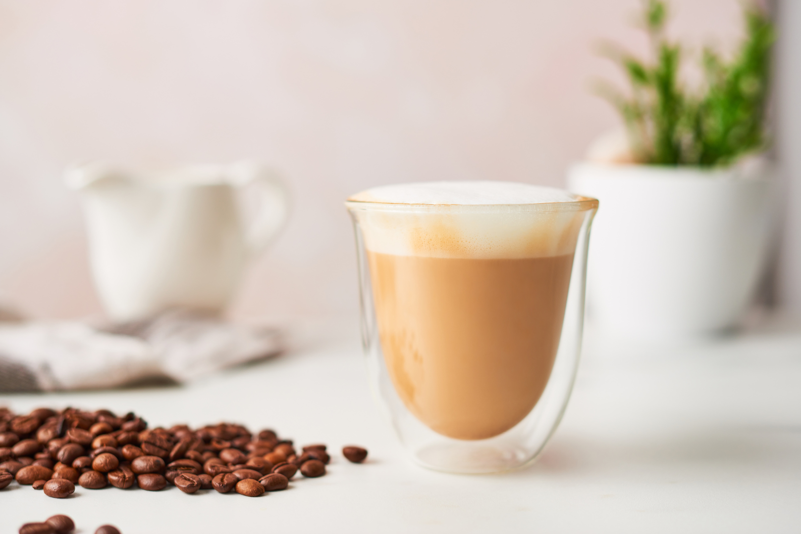

Cappuccino

Cappuccino is a classic Italian coffee drink that's made by combining equal parts espresso, steamed milk, and frothed milk. The drink is traditionally served in a small cup and topped with a sprinkle of cocoa powder or cinnamon. Cappuccinos are known for their creamy texture and rich, bold flavor, making them a popular choice for coffee lovers who enjoy a more indulgent drink.